คู่มือการใช้งานระบบบริหารจัดการเว็บไซต์
ข้อมูลควบคุมเอกสาร (Document Control & Versioning)
| ข้อมูล | รายละเอียด |
|---|---|
| ชื่อเอกสาร | คู่มือการใช้งานระบบบริหารจัดการเว็บไซต์ |
| รหัสเอกสาร | GOWEB-MAN-CMS-001 |
| เวอร์ชันปัจจุบัน | v1.0.0 |
| วันที่อนุมัติ / เผยแพร่ | 29 กันยายน 2569 (2026-09-29) |
| ระดับชั้นความลับ | สำหรับเจ้าหน้าที่และผู้ดูแลระบบของหน่วยงาน |
| พัฒนาโดย | ทีมพัฒนาซอฟต์แวร์และเทคโนโลยีสารสนเทศ |
ประวัติการปรับปรุงเอกสาร
| เวอร์ชัน | วันที่ | รายละเอียด | ผู้จัดทำ | ผู้อนุมัติ |
|---|---|---|---|---|
| 1.0.0 | 29/09/2026 | จัดทำคู่มือฉบับแรก ครอบคลุมเมนูใช้งานหลักทั้งหมด | ทีมพัฒนาระบบ | ผู้จัดการโครงการ |
หมายเหตุเกี่ยวกับภาพประกอบ:
ภาพหน้าจอในคู่มือนี้มาจากการติดตั้งจริงของหน่วยงานตัวอย่าง โครงสร้างและปุ่มใช้งานเหมือนกันทุกหน่วยงาน ชื่อหน่วยงาน โลโก้ และเนื้อหาจะต่างกันตามที่ติดตั้ง
สารบัญ
- ภาพรวมระบบและสถาปัตยกรรม (System Overview)
- การเข้าสู่ระบบและการจัดการบัญชีผู้ใช้ (Authentication & Account)
- ภาพรวมแดชบอร์ดหลัก (Dashboard Overview)
- มาตรฐานการจัดการข้อมูลแบบ CRUD (Standard CRUD Operations)
- การบริหารจัดการเนื้อหาเว็บไซต์ (Content Management Modules)
- 5.1 ข่าวสารและประกาศ (News & Announcements)
- 5.2 ภาพสไลด์แบนเนอร์ประชาสัมพันธ์ (Banners)
- 5.3 ประมวลภาพกิจกรรม (Gallery)
- 5.4 ปฏิทินกิจกรรมและนัดหมาย (Event Calendar)
- 5.5 หน้าเพจเนื้อหาคงที่ (Static Pages)
- 5.6 ข้อมูลสถานที่และแหล่งท่องเที่ยว (Attractions & Landmarks)
- 5.7 สินค้าชุมชนและผลิตภัณฑ์ท้องถิ่น (OTOP & Local Products)
- 5.8 วิดีโอสื่อประชาสัมพันธ์ (Promotional Videos)
- 5.9 กล่องข้อความและไฮไลต์หน้าแรก (Content Box)
- 5.10 ระบบจัดการคลังสื่อและไฟล์อัปโหลด (Media & File Manager)
- 5.11 การจัดการโครงสร้างเมนูเว็บไซต์ (Navigation Menus)
- 5.12 การตั้งค่าหน้าต้อนรับ ข้อมูลหน่วยงาน และ SEO (Site Settings)
- ระบบบริการประชาชนออนไลน์และการรับเรื่องร้องเรียน (E-Service & Public Engagement)
- ข้อมูลองค์กรและการประเมินผลมาตรฐาน (Directory & Assessments)
- การบริหารความปลอดภัยและสิทธิ์การเข้าถึง (Security & Administration)
- ข้อแนะนำและมาตรฐานความปลอดภัย (Best Practices)
1. ภาพรวมระบบและสถาปัตยกรรม (System Overview)
ระบบนี้ช่วยให้หน่วยงานภาครัฐและองค์กรปกครองส่วนท้องถิ่น (อปท.) จัดการเว็บไซต์และบริการประชาชนได้ในที่เดียว จุดเด่นหลักมีดังนี้:
- ใช้งานลื่น ไม่ต้องรีโหลดหน้า: บันทึก ค้นหา กรอง และเปลี่ยนหน้าได้ทันที
- หน้าจอรูปแบบเดียวกันทุกเมนู: เรียนรู้เมนูหนึ่ง ใช้เมนูอื่นได้คล้ายกัน
- ปลอดภัยตามมาตรฐาน: ยืนยันตัวตน (2FA/reCAPTCHA) สิทธิ์ตามบทบาท เข้ารหัสรหัสผ่าน และบันทึกประวัติการใช้งาน
- รองรับงานภาครัฐ: เชื่อมกับ e-GP หนังสือราชการอิเล็กทรอนิกส์ และการประเมิน ITA / LPA
2. การเข้าสู่ระบบและการจัดการบัญชีผู้ใช้ (Authentication & Account)
2.1 ขั้นตอนการเข้าสู่ระบบ (Sign In)
- URL เข้าสู่ระบบ:
https://[ชื่อโดเมนของหน่วยงาน]/auth(หรือhttp://127.0.0.1:8000/authในสภาพแวดล้อมทดสอบ)
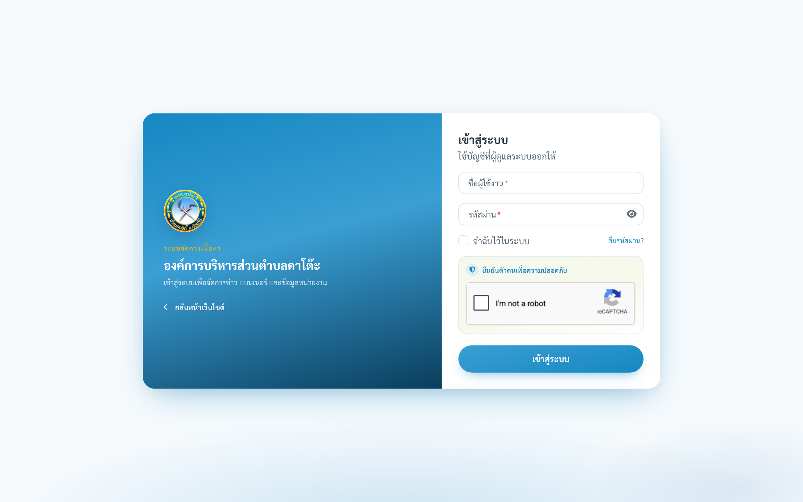
ขั้นตอนการปฏิบัติ:
- เปิดเว็บบราวเซอร์ (แนะนำ Chrome, Edge หรือ Safari เวอร์ชันล่าสุด)
- เปิด URL เข้าสู่ระบบหลังบ้านของหน่วยงาน
- กรอก ชื่อผู้ใช้งาน ที่ได้รับจากผู้ดูแลระบบ
- กรอก รหัสผ่าน
- (ถ้าใช้เครื่องส่วนตัว) ติ๊ก "จำฉันไว้ในระบบ"
- ติ๊ก "I'm not a robot" เพื่อยืนยันว่าไม่ใช่บอท
- คลิก "เข้าสู่ระบบ"
2.2 การจัดการบัญชีผู้ใช้และการเปลี่ยนรหัสผ่าน
คลิกชื่อโปรไฟล์มุมบนขวา เพื่อเข้าเมนูส่วนตัว:
ข้อมูลบัญชีส่วนตัว (/auth/account) |
เปลี่ยนรหัสผ่านความปลอดภัย (/auth/password) |
|---|---|
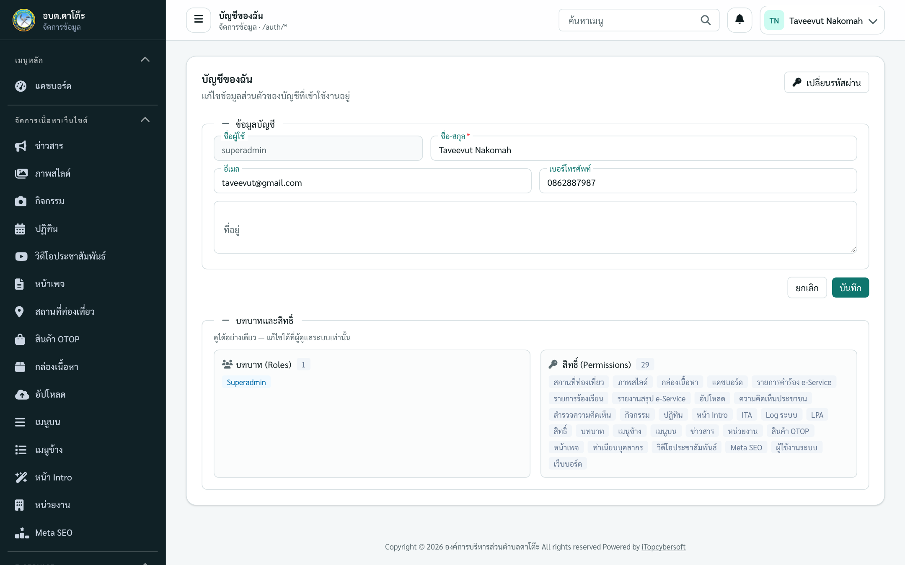 |
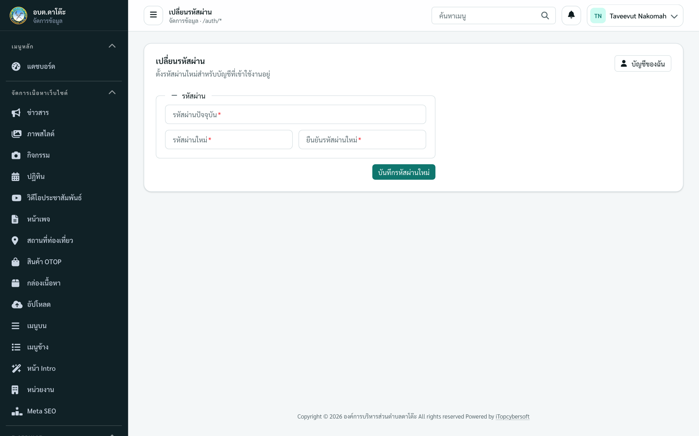 |
- ข้อมูลบัญชี (
/auth/account): ดูชื่อ-นามสกุล อีเมล และชื่อบัญชี - เปลี่ยนรหัสผ่าน (
/auth/password): ใส่รหัสผ่านเดิม และรหัสผ่านใหม่ (อย่างน้อย 8 ตัวอักษร) - ออกจากระบบ: คลิกชื่อบัญชีมุมบนขวา → "ออกจากระบบ" เพื่อปิดเซสชันและป้องกันผู้อื่นใช้ต่อ
3. ภาพรวมแดชบอร์ดหลัก (Dashboard Overview)
- URL:
/auth/dashboard
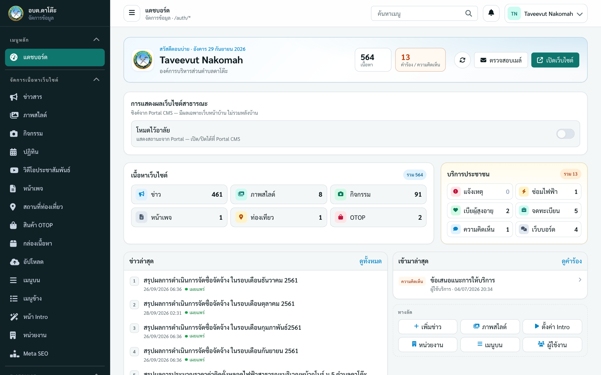
แดชบอร์ดสรุปสถานะเว็บไซต์และงานที่ต้องทำ ประกอบด้วย:
- แถบต้อนรับและสถิติ: ชื่อผู้ใช้งาน จำนวนเนื้อหาทั้งหมด จำนวนคำร้อง/ความคิดเห็นที่รอตอบ และปุ่มเปิดเว็บไซต์สาธารณะ
- โหมดไว้อาลัย: สวิตช์เปิด/ปิดโทนสีไว้อาลัยบนหน้าเว็บสาธารณะ
- การ์ดสรุปเนื้อหา: จำนวนข่าว แบนเนอร์ ภาพกิจกรรม หน้าเพจ แหล่งท่องเที่ยว และสินค้าชุมชน
- การ์ด E-Service: สถานะคำร้องตามประเภท เช่น แจ้งเหตุ ซ่อมไฟฟ้า เบี้ยผู้สูงอายุ จดทะเบียนพาณิชย์
- ข่าวล่าสุด: ข่าว 5 รายการล่าสุด พร้อมสถานะ (เผยแพร่ / ฉบับร่าง)
- ปุ่มทางลัด: เข้าเมนูหลักได้เร็ว เช่น เพิ่มข่าว จัดการแบนเนอร์ ตั้งค่าหน่วยงาน จัดการเมนู และผู้ใช้งาน
4. มาตรฐานการจัดการข้อมูลแบบ CRUD (Standard CRUD Operations)
ทุกเมนูใช้วิธีทำงานแบบเดียวกัน ทำให้เรียนรู้ง่าย
4.1 [R - Read] การเปิดดูรายการ การค้นหา และตัวกรอง
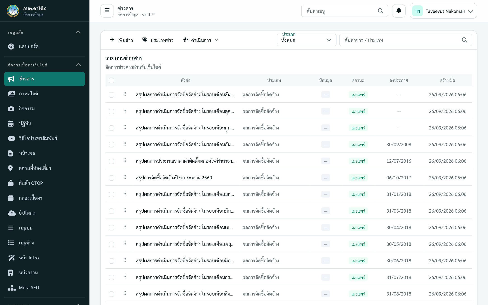
- ค้นหา: พิมพ์คำค้น ระบบแสดงผลทันที ไม่ต้องกด Enter
- กรองหมวดหมู่: เลือกจากเมนูดรอปดาวน์
- เรียงลำดับ: คลิกหัวตาราง (เช่น หัวข้อ วันที่) เพื่อสลับเรียงจากใหม่ไปเก่า หรือน้อยไปมาก
- แบ่งหน้า: เลือกแสดง 15 / 25 / 50 รายการต่อหน้า ได้ที่มุมล่างขวา
4.2 [C - Create] การเพิ่มข้อมูลใหม่
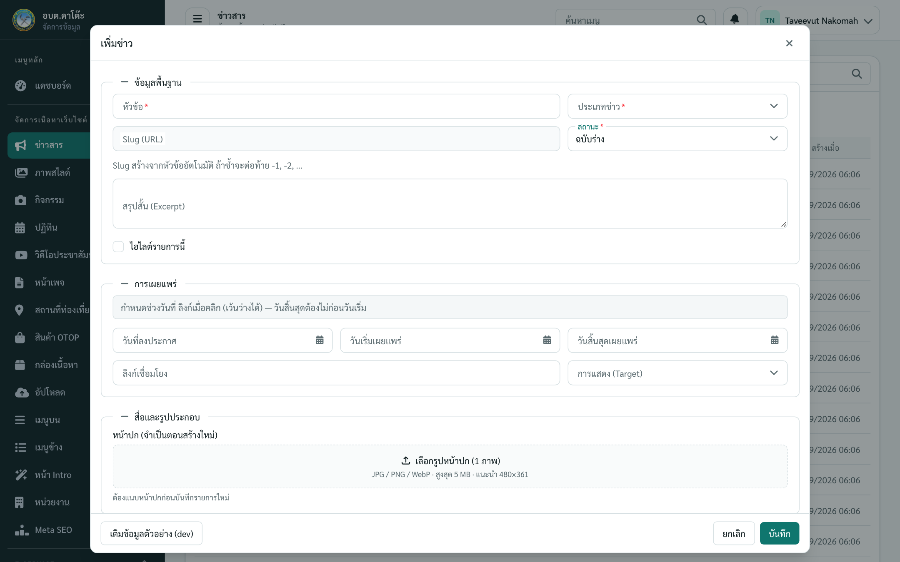
- คลิก "+ เพิ่ม..." ที่แถบด้านบน (เช่น
+ เพิ่มข่าว) - กรอกข้อมูลในหน้าต่างที่เปิดขึ้น:
- ข้อมูลพื้นฐาน: หัวข้อ หมวดหมู่ สถานะ (ฉบับร่าง / เผยแพร่) และบทคัดย่อ
- การเผยแพร่: วันที่ประกาศ วันเริ่ม/สิ้นสุดแสดงผล และลิงก์ภายนอก
- สื่อประกอบ: อัปโหลดรูปปก และไฟล์แนบ (PDF, Word, Excel)
- เนื้อหา: พิมพ์และจัดหน้าด้วยเครื่องมือแก้ไขข้อความ
- คลิก "บันทึก" (สีเขียว) มุมล่างขวา
4.3 [U - Update] การแก้ไขข้อมูลและตัวเลือกประจำแถว
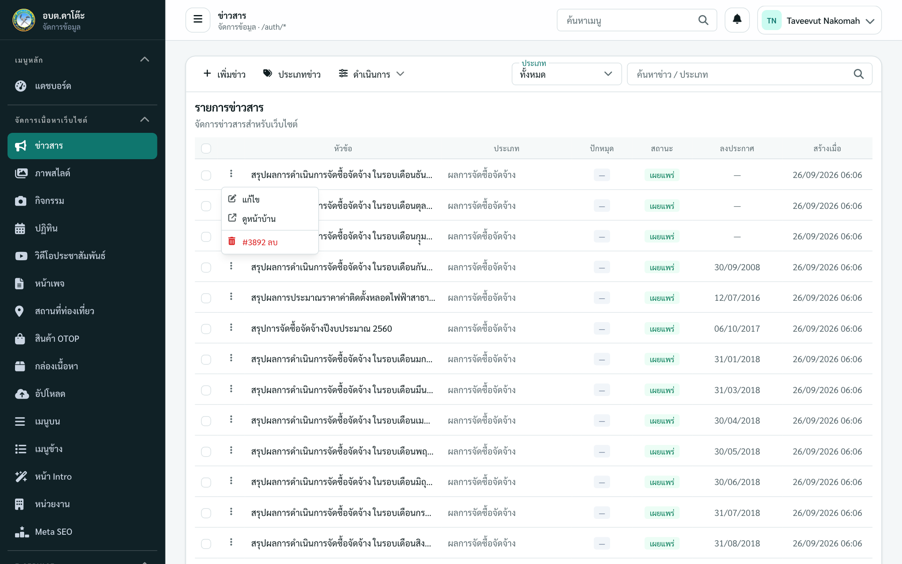
- หาแถวที่ต้องการแก้ไข
- คลิกปุ่ม จุด 3 จุด (⋮) ด้านซ้าย แล้วเลือก:
- แก้ไข: แก้ข้อมูลเดิม
- ดูหน้าบ้าน / ดูตัวอย่าง: เปิดดูผลจริงบนเว็บสาธารณะ
- ลบ: ลบรายการนั้น
4.4 [D - Delete] การลบข้อมูลเดี่ยว และการลบแบบกลุ่ม (Bulk Actions)
| การยืนยันความปลอดภัยก่อนลบข้อมูล | การเลือกหลายรายการเพื่อจัดการพร้อมกัน (Bulk Actions) |
|---|---|
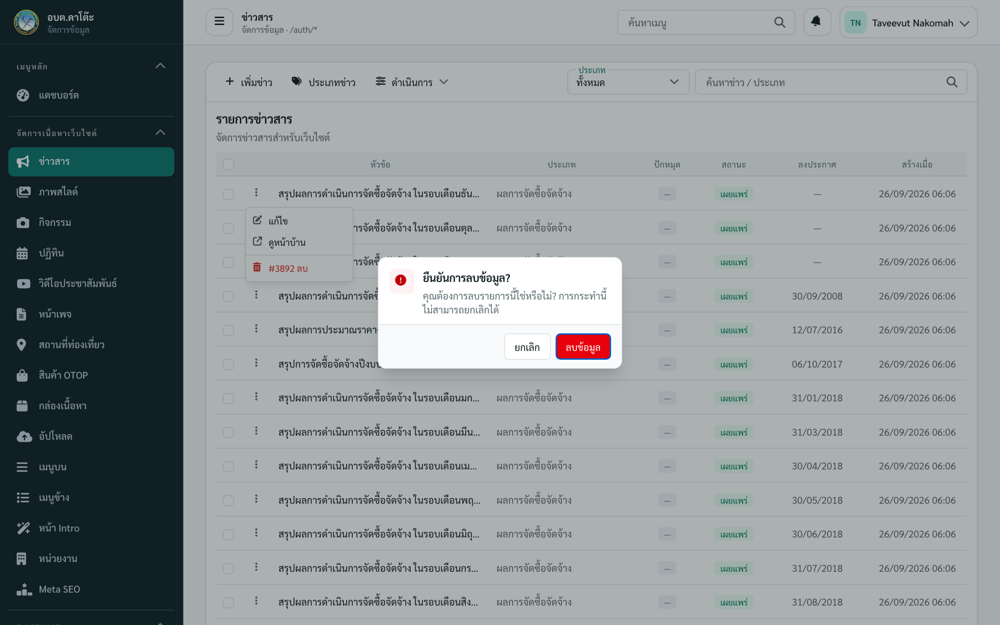 |
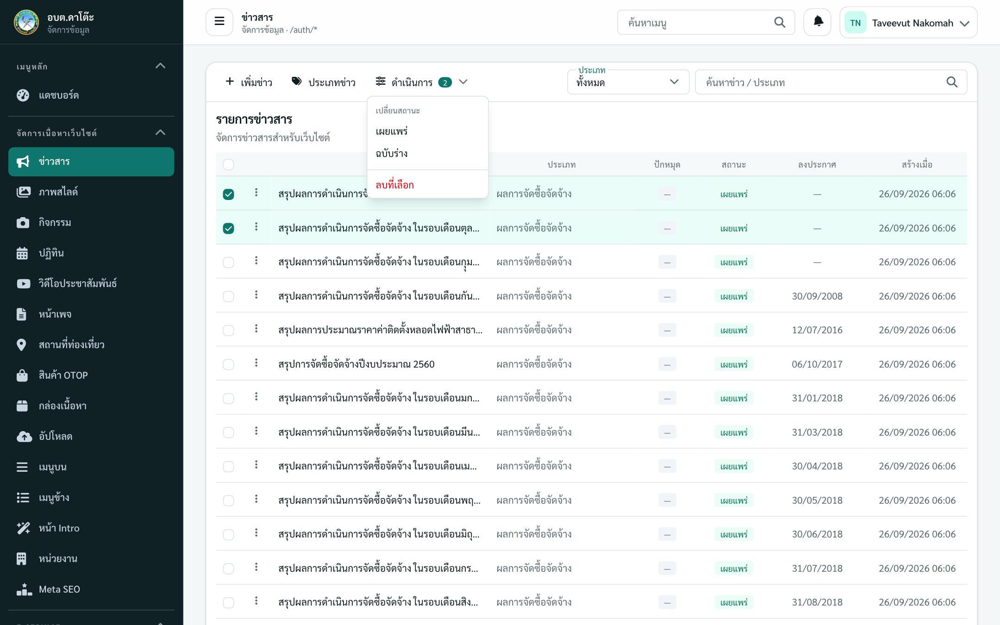 |
- ลบทีละรายการ:
- คลิก "ลบ" ระบบจะถามยืนยันก่อนทุกครั้ง
- ยืนยันแล้ว ข้อมูลและไฟล์ที่ผูกอยู่จะถูกลบออกทันที
- จัดการหลายรายการพร้อมกัน:
- ติ๊กเลือกรายการที่ต้องการ (หรือติ๊กช่องหัวตารางเพื่อเลือกทั้งหมดในหน้านั้น)
- เมนู "ดำเนินการ (จำนวนที่เลือก)" จะพร้อมใช้
- เลือกคำสั่ง:
- เผยแพร่: แสดงบนเว็บพร้อมกัน
- ฉบับร่าง: ซ่อนจากเว็บพร้อมกัน
- ลบที่เลือก: ลบทั้งหมดที่เลือกในครั้งเดียว
5. การบริหารจัดการเนื้อหาเว็บไซต์ (Content Management Modules)
5.1 ข่าวสารและประกาศ (News & Announcements)
- จัดการข่าวสาร:
/auth/news - จัดการประเภทข่าว:
/auth/news/types
| หน้ารายการข่าวสาร | หน้าจัดการประเภทหมวดหมู่ข่าว |
|---|---|
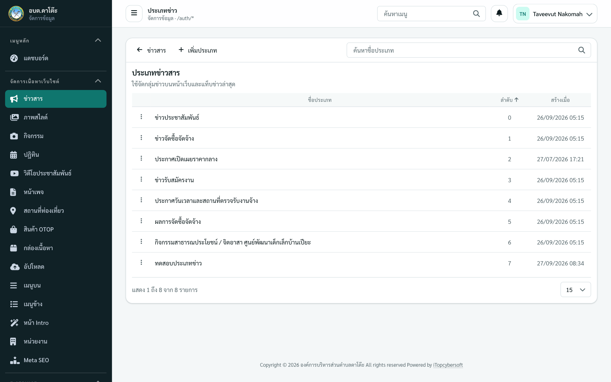 |
- ใช้ทำอะไร: ลงข่าวประชาสัมพันธ์ ประกาศจัดซื้อจัดจ้าง รับสมัครงาน และเอกสารข้อบัญญัติ/เทศบัญญัติ
- วิธีใช้:
- ตั้งค่าประเภทข่าวให้ครบก่อนที่หน้า "ประเภทข่าว"
- ใช้ "ปักหมุด" เพื่อให้ข่าวอยู่บนสุดของหน้าแรก
- รูปปกแนะนำสัดส่วน 4:3 (เช่น 800×600 พิกเซล)
5.2 ภาพสไลด์แบนเนอร์ประชาสัมพันธ์ (Banners)
- URL:
/auth/banners
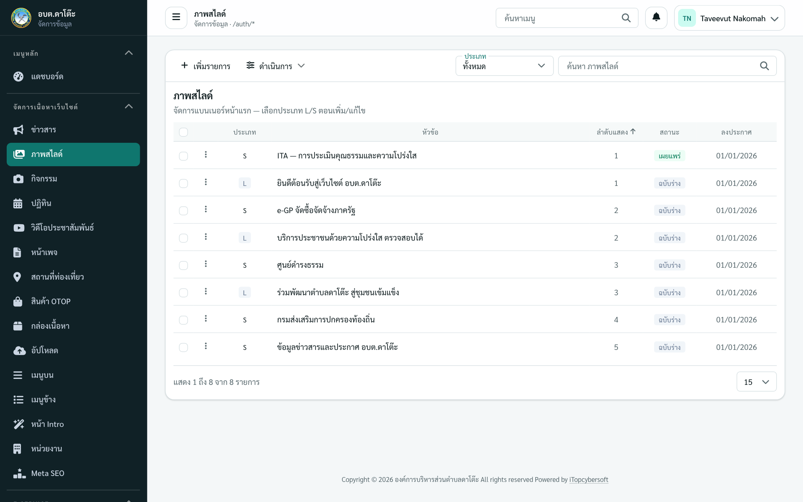
- ใช้ทำอะไร: จัดการภาพสไลด์ด้านบนหน้าแรก เพื่อโปรโมทโครงการหรือนโยบายสำคัญ
- ทำได้:
- แบนเนอร์ขนาดใหญ่ (L) และขนาดย่อย (S)
- กำหนดลำดับการแสดง
- ใส่ลิงก์เมื่อประชาชนคลิกภาพ (ลิงก์ภายในหรือภายนอก)
5.3 ประมวลภาพกิจกรรม (Gallery)
- URL:
/auth/gallery
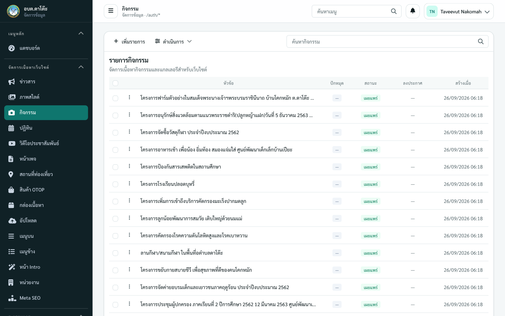
- ใช้ทำอะไร: ลงภาพกิจกรรม งานประเพณี การประชุม และการลงพื้นที่
- วิธีใช้:
- ตั้งชื่อกิจกรรมและวันที่จัด
- แนบรูปปกอัลบั้ม 1 ภาพ
- อัปโหลดรูปบรรยากาศได้หลายรูปพร้อมกัน
5.4 ปฏิทินกิจกรรมและนัดหมาย (Event Calendar)
- URL:
/auth/gallery/calendar
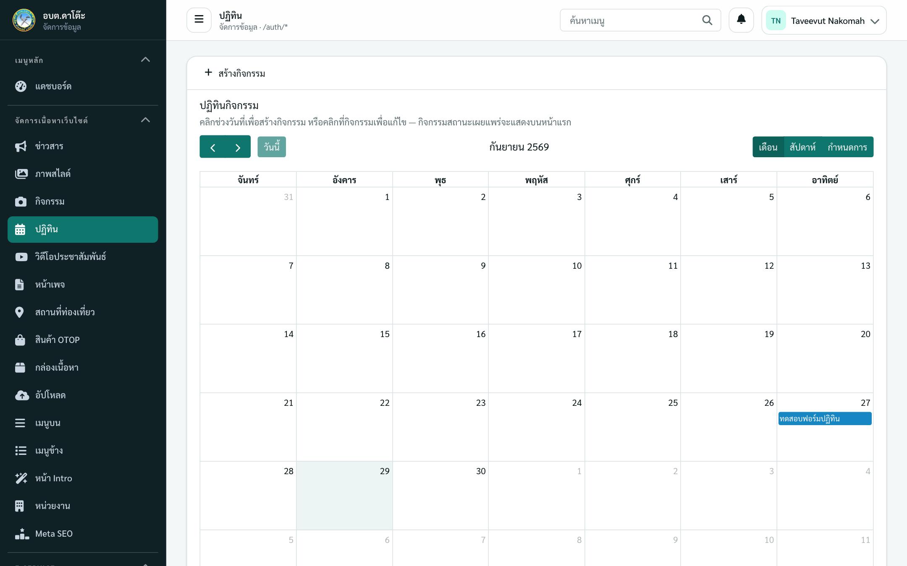
- ใช้ทำอะไร: แสดงนัดหมาย วันประชุม งานเทศกาล และวันหยุดราชการ
- มุมมอง: รายเดือน รายสัปดาห์ รายวัน หรือรายการกำหนดการ
5.5 หน้าเพจเนื้อหาคงที่ (Static Pages)
- URL:
/auth/pages
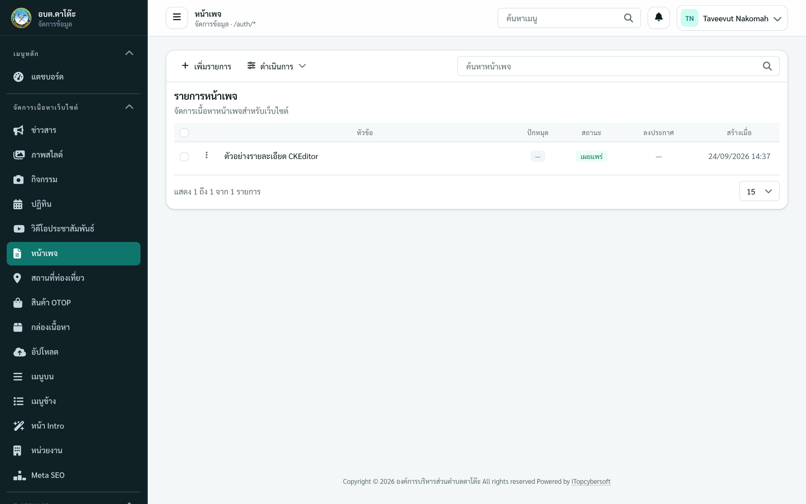
- ใช้ทำอะไร: จัดการหน้าเนื้อหาหลัก เช่น ประวัติ วิสัยทัศน์/พันธกิจ โครงสร้างส่วนราชการ ยุทธศาสตร์ อำนาจหน้าที่
- การเชื่อมโยง: แต่ละหน้ามี URL ของตัวเอง นำไปผูกกับเมนูบนหรือเมนูข้างได้เลย
5.6 ข้อมูลสถานที่และแหล่งท่องเที่ยว (Attractions & Landmarks)
- URL:
/auth/attractions
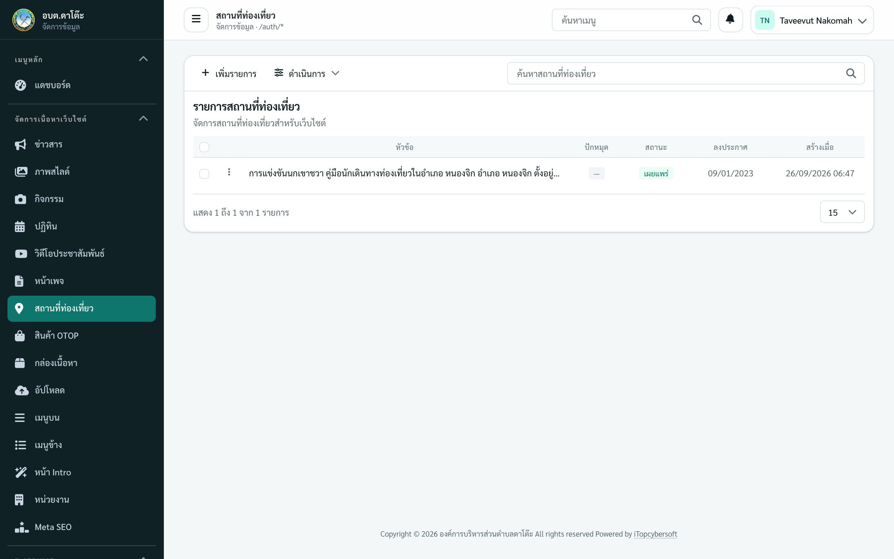
- ใช้ทำอะไร: แนะนำสถานที่สำคัญ จุดแลนด์มาร์ก และแหล่งท่องเที่ยวในพื้นที่
- ข้อมูลที่ใส่ได้: ชื่อ คำบรรยาย แกลเลอรีภาพ พิกัดแผนที่ (Google Maps) และช่องทางติดต่อ
5.7 สินค้าชุมชนและผลิตภัณฑ์ท้องถิ่น (OTOP & Local Products)
- URL:
/auth/otop
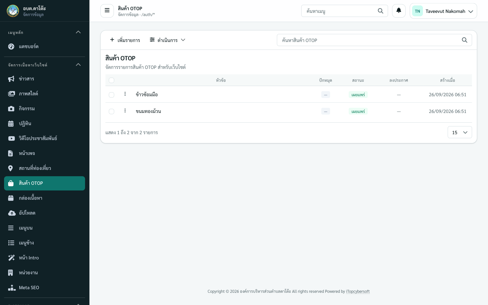
- ใช้ทำอะไร: แสดงสินค้าเด่นของกลุ่มแม่บ้าน วิสาหกิจชุมชน และ OTOP
- ข้อมูลที่ใส่ได้: ชื่อสินค้า รูปภาพ รายละเอียด ราคา กลุ่มผู้ผลิต และช่องทางสั่งซื้อ
5.8 วิดีโอสื่อประชาสัมพันธ์ (Promotional Videos)
- URL:
/auth/promo-videos
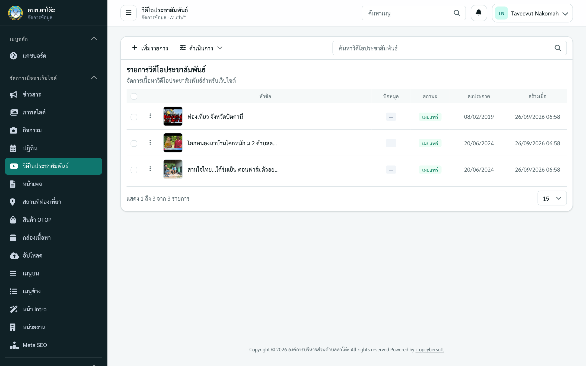
- ใช้ทำอะไร: เผยแพร่วิดีโอแนะนำองค์กร รายงานผลงาน หรือสารคดีชุมชน
- วิธีใช้: วางลิงก์หรือรหัส Embed จาก YouTube ระบบจะดึงภาพปกและสร้างเครื่องเล่นให้อัตโนมัติ
5.9 กล่องข้อความและไฮไลต์หน้าแรก (Content Box)
- URL:
/auth/box
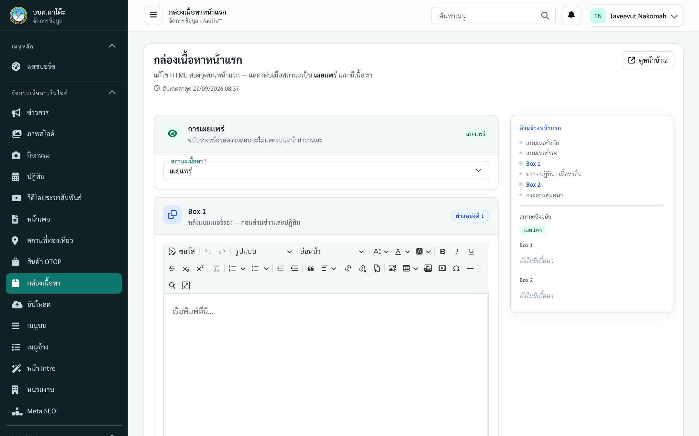
- ใช้ทำอะไร: จัดการพื้นที่พิเศษบนหน้าแรก เช่น สารจากผู้บริหาร คำแถลงนโยบาย หรือประกาศเร่งด่วน
5.10 ระบบจัดการคลังสื่อและไฟล์อัปโหลด (Media & File Manager)
- URL:
/auth/editor-uploads
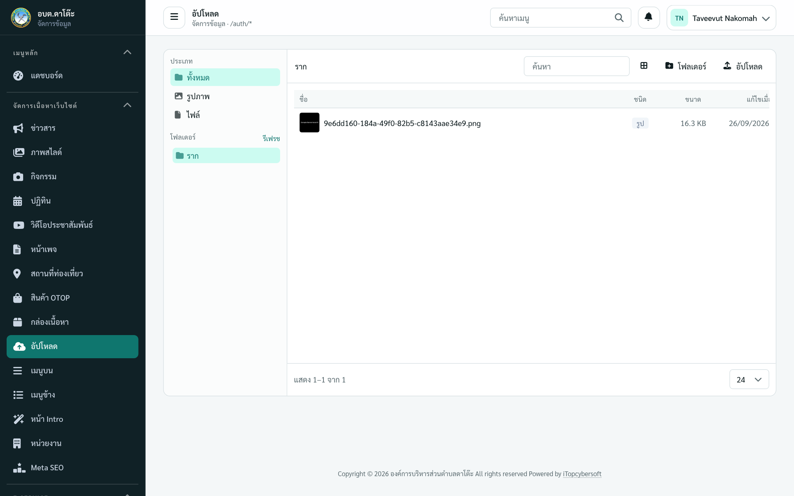
- ใช้ทำอะไร: เก็บไฟล์ภาพ เอกสาร PDF แผ่นพับ และสื่อดิจิทัลของหน่วยงาน
- ทำได้:
- สร้างโฟลเดอร์จัดหมวดหมู่
- อัปโหลดแบบลากวาง
- เปลี่ยนชื่อและย้ายไฟล์ข้ามโฟลเดอร์
- คัดลอกลิงก์ไปใช้ในบทความได้ทันที
5.11 การจัดการโครงสร้างเมนูเว็บไซต์ (Navigation Menus)
- เมนูบน (Top Navbar):
/auth/menu-top - เมนูข้าง (Sidebar Menu):
/auth/menu-side
| การจัดโครงสร้างเมนูบน | การจัดโครงสร้างเมนูข้าง |
|---|---|
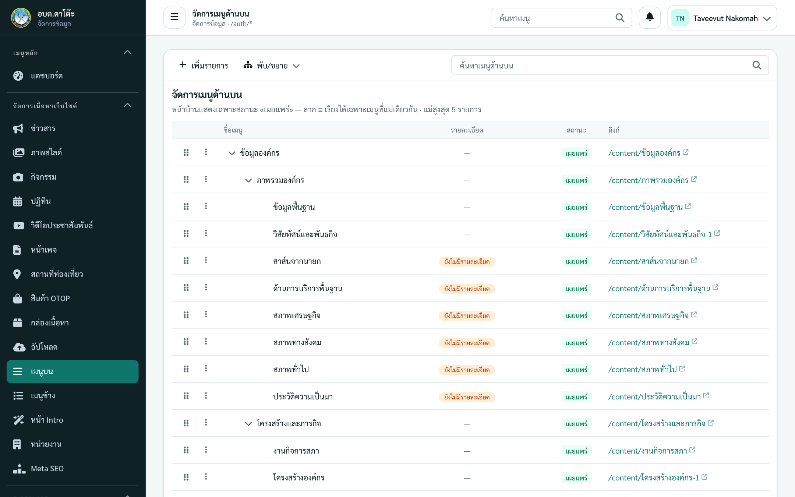 |
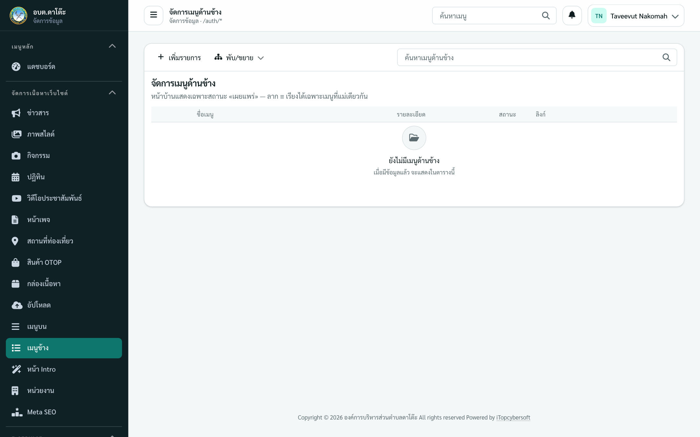 |
- ใช้ทำอะไร: จัดเมนูนำทางของเว็บไซต์
- วิธีใช้:
- เพิ่มเมนูหลักและเมนูย่อย
- กำหนดปลายทางเป็นลิงก์ภายในหรือภายนอก
- จัดลำดับการแสดงได้ตามต้องการ
5.12 การตั้งค่าหน้าต้อนรับ ข้อมูลหน่วยงาน และ SEO (Site Settings)
- หน้า Intro:
/auth/setting/intro - ข้อมูลหน่วยงาน:
/auth/setting/org - Meta SEO:
/auth/setting/seo
| หน้า Intro เทศกาลสำคัญ | ข้อมูลหน่วยงานและช่องทางติดต่อ | ตั้งค่า Meta SEO ค้นหา |
|---|---|---|
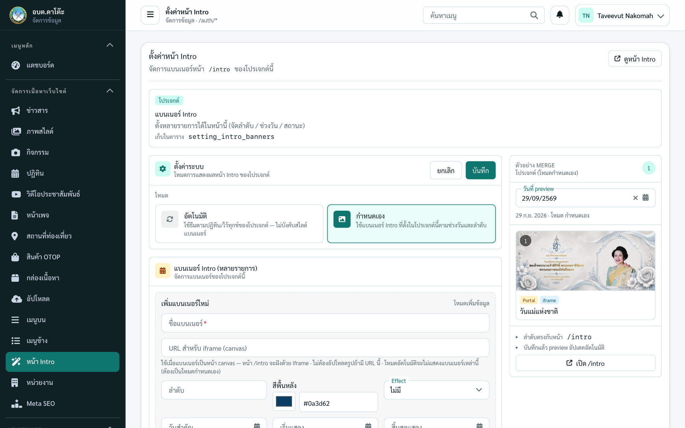 |
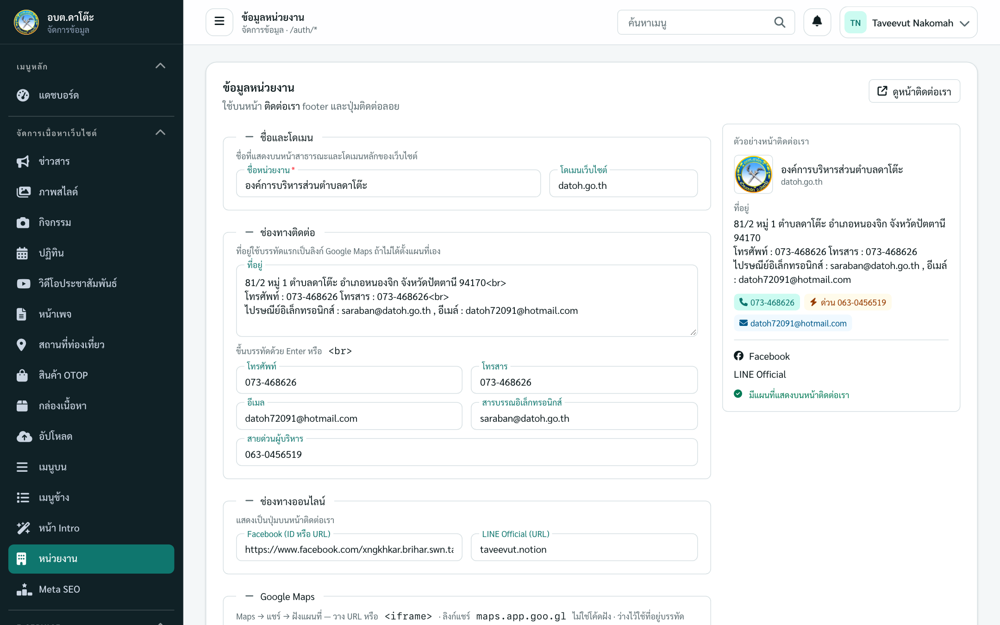 |
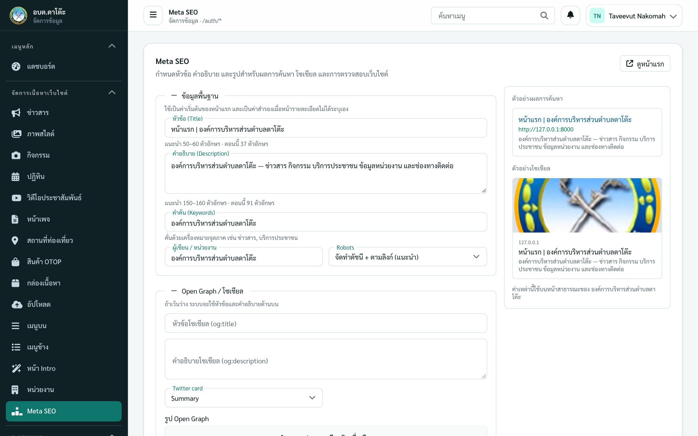 |
- หน้า Intro: เปิด/ปิดหน้าต้อนรับพิเศษในวันสำคัญหรือเทศกาล
- ข้อมูลหน่วยงาน: ตั้งชื่อหน่วยงาน โลโก้ ที่อยู่ โทรศัพท์ อีเมล แผนที่ และลิงก์โซเชียล
- Meta SEO: ตั้ง Title, Description, Keywords และภาพแชร์โซเชียล เพื่อให้ค้นหาเจอบน Google ได้ดีขึ้น
6. ระบบบริการประชาชนออนไลน์และการรับเรื่องร้องเรียน (E-Service & Public Engagement)
6.1 การจัดการคำร้องบริการออนไลน์ (E-Service Requests)
- URL:
/auth/e-service/services
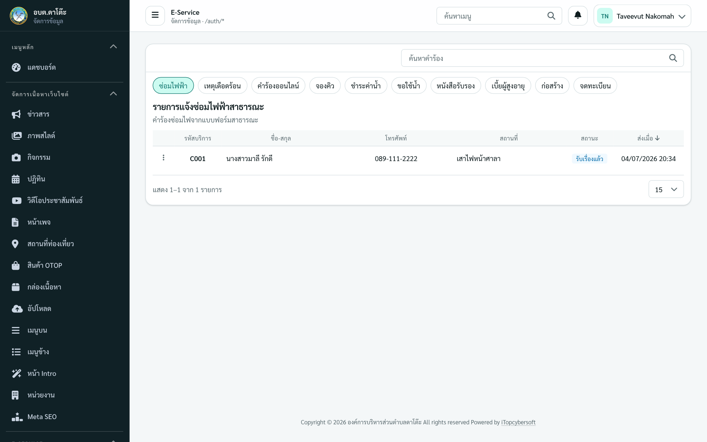
- ใช้ทำอะไร: รับและติดตามคำขอรับบริการออนไลน์ ตาม พ.ร.บ.การปฏิบัติราชการทางอิเล็กทรอนิกส์ พ.ศ. 2565
- ประเภทบริการที่รองรับ:
- คำร้องทั่วไป
- ลงทะเบียนเบี้ยยังชีพผู้สูงอายุ / คนพิการ
- จดทะเบียนพาณิชย์
- ใบอนุญาตก่อสร้าง
- ติดตั้ง / ซ่อมไฟฟ้าสาธารณะ
- ติดตั้งน้ำประปา / ชำระค่าน้ำ
- ขอหนังสือรับรองและเอกสารราชการ
- ขั้นตอนของเจ้าหน้าที่:
- ตรวจคำร้องใหม่ที่เข้ามา
- เปิดดูรายละเอียดและเอกสารแนบ
- อัปเดตสถานะ: รอดำเนินการ → กำลังดำเนินการ → อนุมัติ / เสร็จสิ้น (หรือไม่อนุมัติ)
- บันทึกข้อความตอบกลับ ให้ประชาชนติดตามสถานะผ่านเว็บได้
6.2 ศูนย์รับเรื่องร้องทุกข์และเรื่องร้องเรียน (Public Complaints)
- URL:
/auth/e-service/complaints
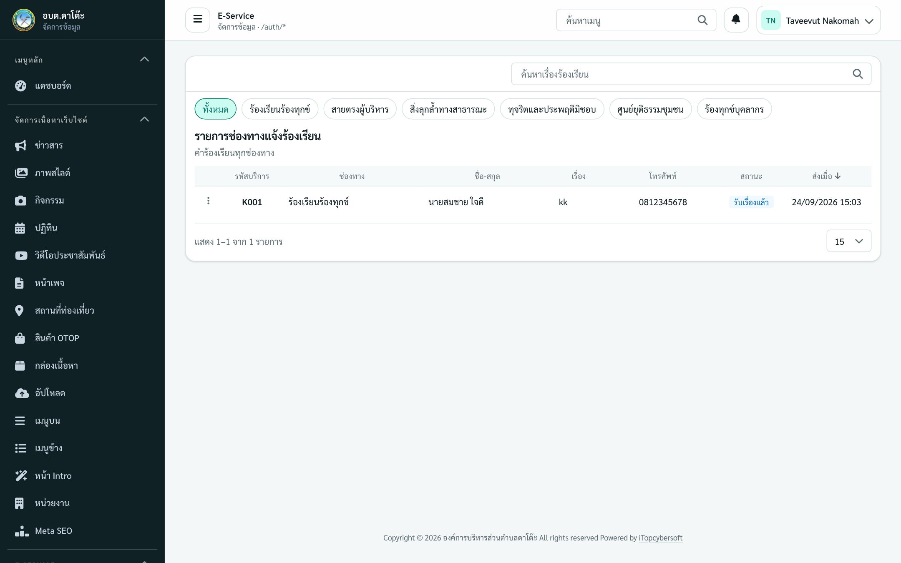
- ใช้ทำอะไร: รับเรื่องร้องทุกข์ ข้อเสนอแนะ และการแจ้งเบาะแสทุจริต
- การคุ้มครองข้อมูล:
- แยกช่องทางร้องเรียนทั่วไป และช่องทางร้องเรียนลับ (สายตรงผู้บริหาร / ป.ป.ช. / ป.ป.ท.)
- ข้อมูลตัวตนผู้ร้องเรียนถูกปกปิดตาม พ.ร.บ.คุ้มครองข้อมูลส่วนบุคคล (PDPA)
6.3 รายงานสรุปสถิติผลการดำเนินงาน (Service Summary Reports)
- URL:
/auth/e-service/summary
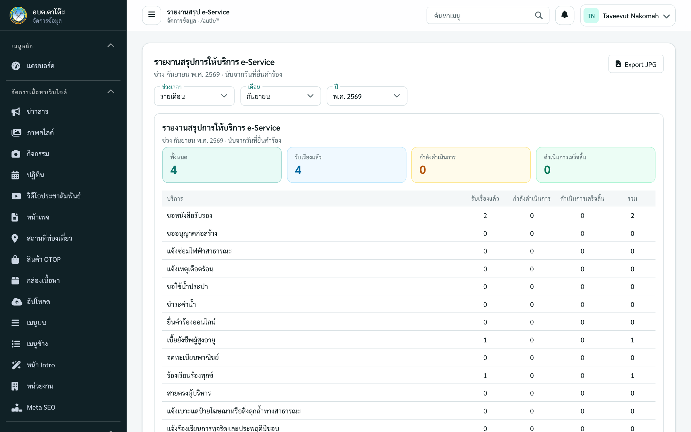
- ใช้ทำอะไร: ดูสถิติคำร้องแต่ละประเภท รายเดือนและรายปี สำหรับรายงานผู้บริหารและหน่วยงานกำกับดูแล
7. ข้อมูลองค์กรและการประเมินผลมาตรฐาน (Directory & Assessments)
7.1 ระบบความคิดเห็นและแบบสำรวจ (Citizen Feedback & Surveys)
- ความคิดเห็นประชาชน:
/auth/feedback - สำรวจความคิดเห็น:
/auth/feedback-surveys
| ความคิดเห็นและข้อเสนอแนะ | แบบสำรวจความพึงพอใจ |
|---|---|
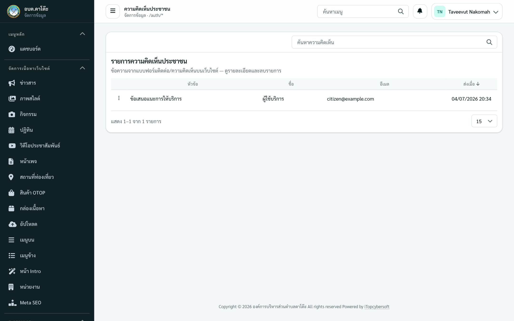 |
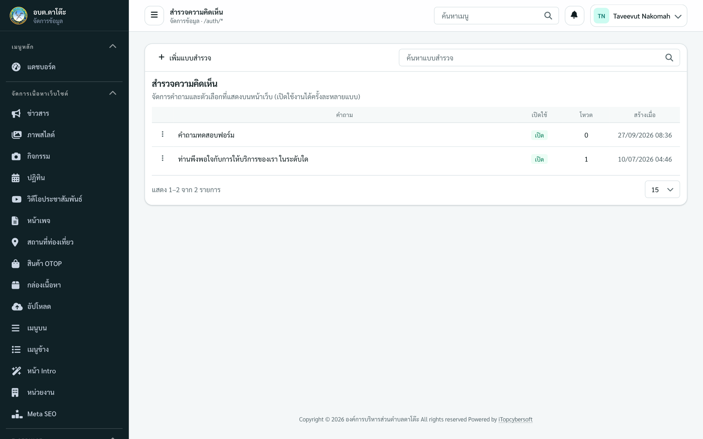 |
- ความคิดเห็นประชาชน: รับฟังความเห็น ประเมินความพึงพอใจ และข้อเสนอแนะ
- แบบสำรวจ: สร้างโพลล์หรือแบบสอบถามออนไลน์ในประเด็นสำคัญ
7.2 กระดานสนทนาสาธารณะ (Webboard)
- URL:
/auth/webboard
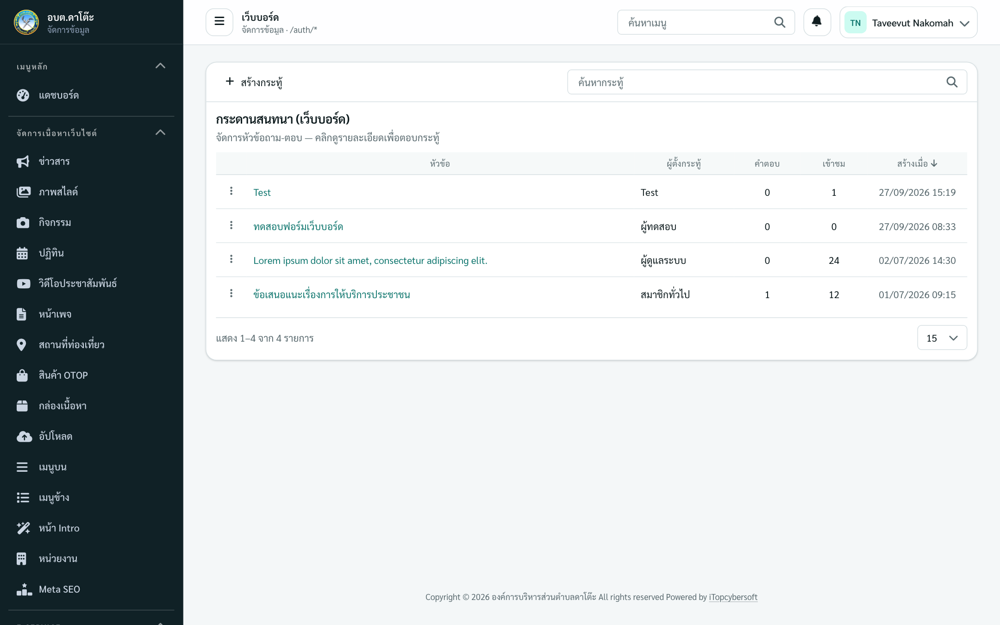
- ใช้ทำอะไร: ช่องทางถาม-ตอบระหว่างประชาชนกับเจ้าหน้าที่
- การดูแล: ตอบกระทู้ ปักหมุดกระทู้สำคัญ หรือลบข้อความไม่เหมาะสม
7.3 ทำเนียบบุคลากรและโครงสร้างองค์กร (Personnel Directory)
- URL:
/auth/personal
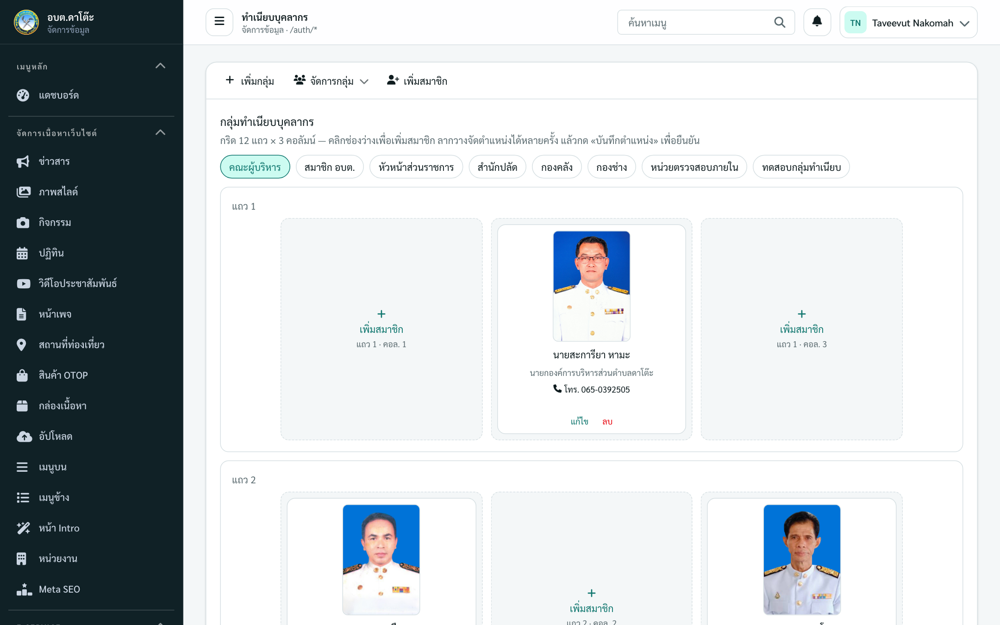
- ใช้ทำอะไร: แสดงผังผู้บริหาร สมาชิกสภา และบุคลากร
- หมวดส่วนราชการ:
- คณะผู้บริหาร
- สภาองค์กรปกครองส่วนท้องถิ่น
- สำนักปลัด
- กองคลัง
- กองช่าง
- กองการศึกษา ศาสนา และวัฒนธรรม
- กองสาธารณสุขและสิ่งแวดล้อม
- ข้อมูลบุคลากร: ชื่อ-นามสกุล ตำแหน่ง รูปถ่าย เบอร์โทร และลำดับการแสดง
7.4 ระบบประเมินคุณธรรมและความโปร่งใส (ITA) และประสิทธิภาพ (LPA)
- การประเมิน ITA:
/auth/ita - การประเมิน LPA:
/auth/lpa
| การประเมินคุณธรรมและความโปร่งใส (ITA) | การประเมินประสิทธิภาพ อปท. (LPA) |
|---|---|
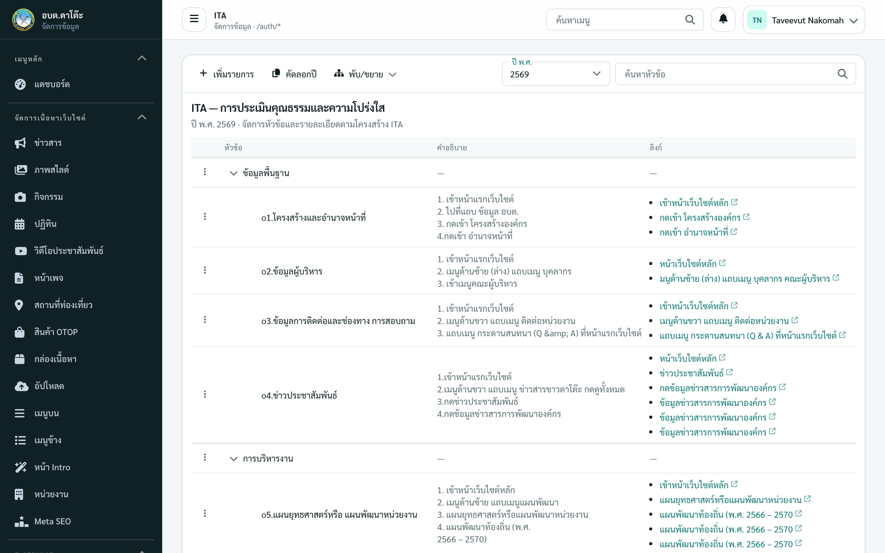 |
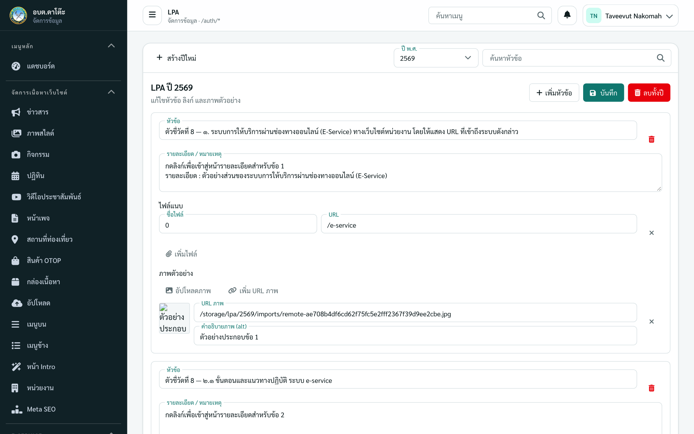 |
- ITA: จัดการเอกสารและลิงก์เปิดเผยข้อมูลตามเกณฑ์ ป.ป.ช. (ตัวชี้วัด O1–O43)
- LPA: เก็บหลักฐานประเมินประสิทธิภาพ อปท. 5 ด้าน (บริหารจัดการ งานบุคคล การเงิน การบริการสาธารณะ และธรรมาภิบาล)
8. การบริหารความปลอดภัยและสิทธิ์การเข้าถึง (Security & Administration)
8.1 การจัดการผู้ใช้งานระบบ (User Management)
- URL:
/auth/system-users
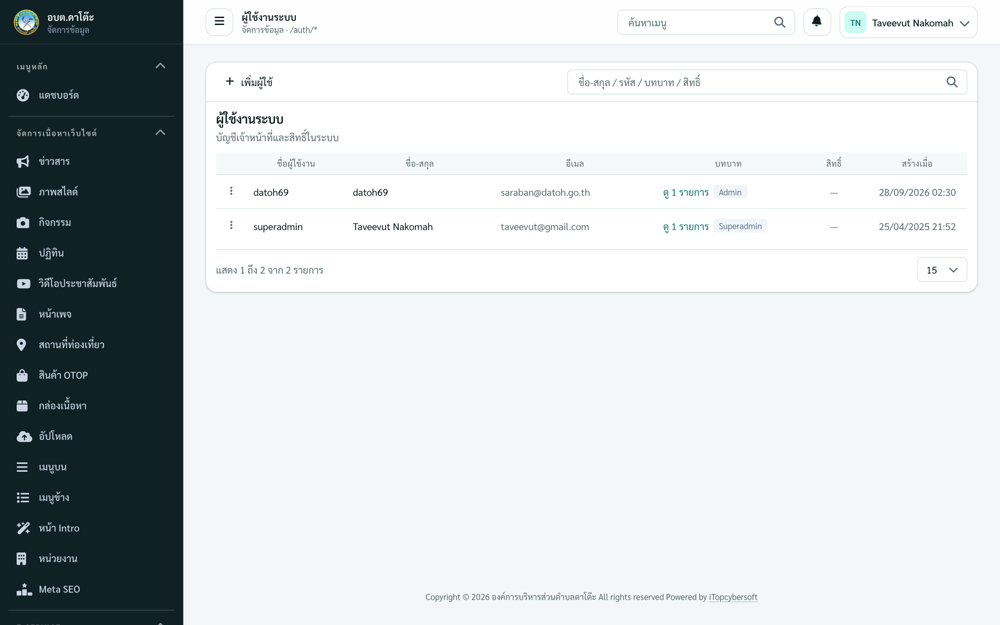
- สร้างบัญชีใหม่: ตั้ง Username อีเมล รหัสผ่านชั่วคราว และมอบหมายบทบาท
- ระงับบัญชี: เปิด/ปิดการเข้าใช้งานได้ทันที เมื่อมีการย้ายงานหรือพ้นสภาพ
8.2 บทบาทและสิทธิ์การใช้งาน (Roles & Permissions)
- บทบาท (Roles):
/auth/master/roles - สิทธิ์ (Permissions):
/auth/master/permissions
| การกำหนดบทบาท (Roles) | การกำหนดสิทธิ์การเข้าถึง (Permissions) |
|---|---|
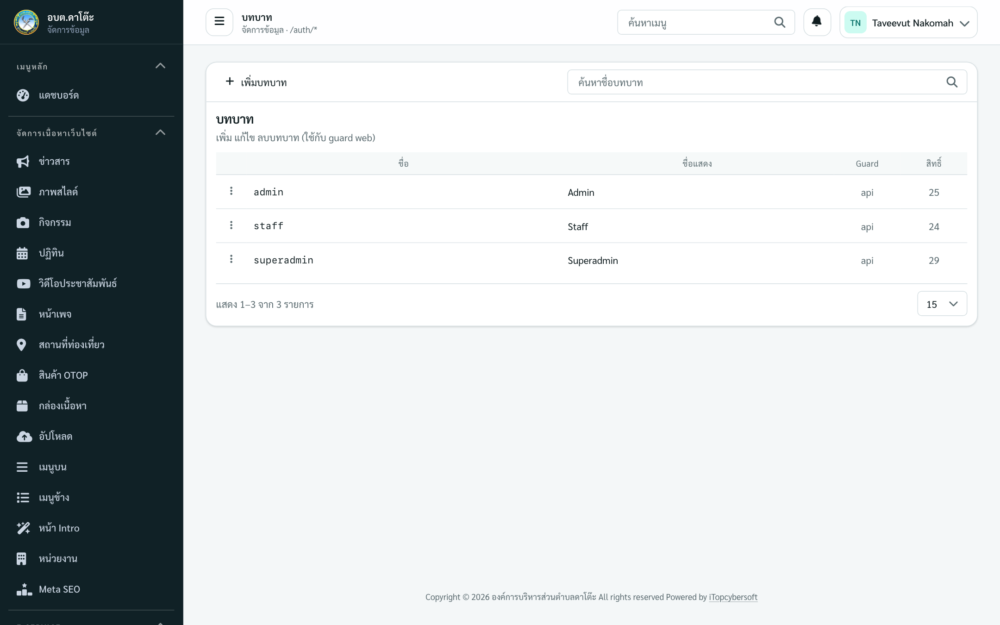 |
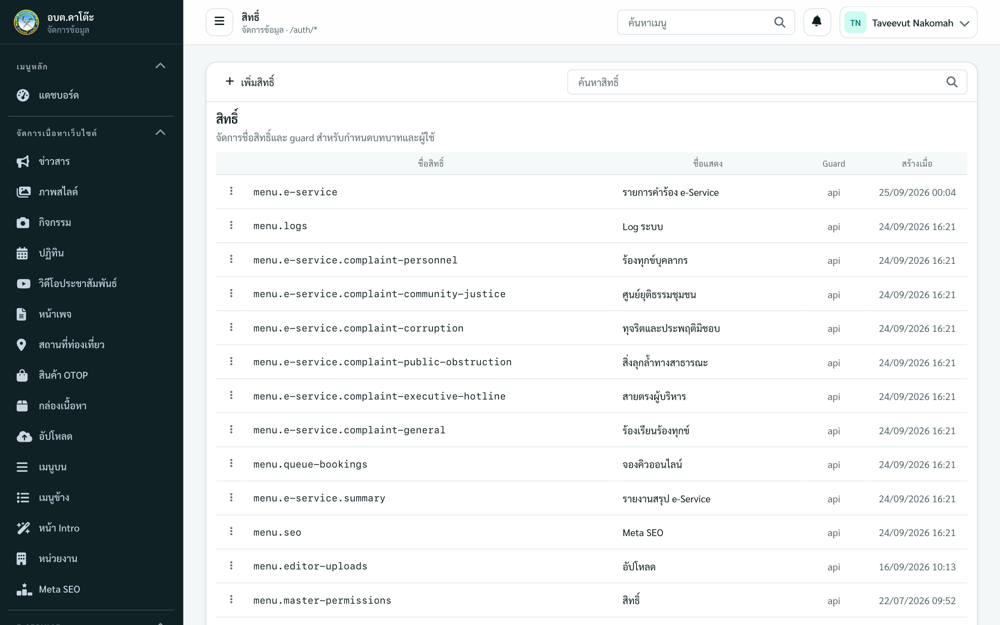 |
- บทบาท: จัดกลุ่มผู้ใช้ตามหน้าที่ เช่น ผู้ดูแลระบบสูงสุด เจ้าหน้าที่ประชาสัมพันธ์ เจ้าหน้าที่ทะเบียน เจ้าหน้าที่รับเรื่องร้องเรียน
- สิทธิ์: กำหนดละเอียดต่อโมดูล เช่น ดูอย่างเดียว สร้าง/แก้ไขได้ หรือลบได้
8.3 บันทึกประวัติและตรวจสอบการใช้งาน (Audit Logs)
- URL:
/auth/logs
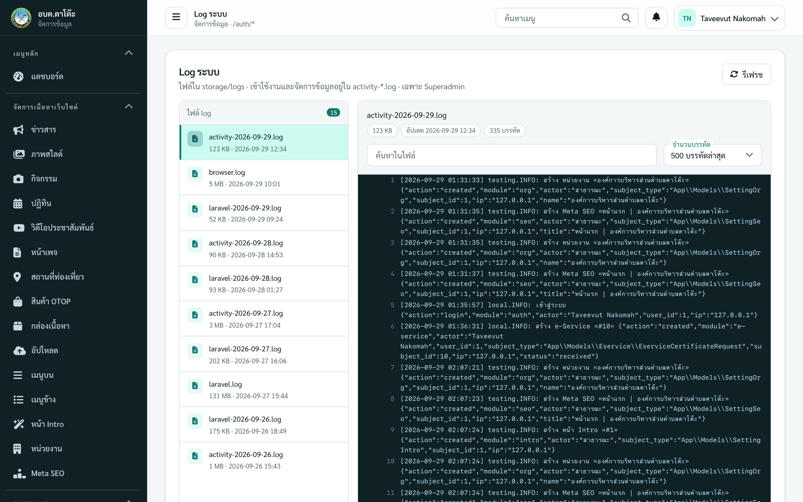
- ใช้ทำอะไร: เก็บหลักฐานการใช้งานระบบ ตาม พ.ร.บ.คอมพิวเตอร์
- ข้อมูลที่บันทึก: วันเวลา ผู้ใช้ กิจกรรม (สร้าง/แก้ไข/ลบ/ล็อกอิน) โมดูล และ IP Address
9. ข้อแนะนำและมาตรฐานความปลอดภัย (Best Practices)
- บันทึกทุกครั้ง: กรอกฟอร์มเสร็จแล้วกด "บันทึก" (สีเขียว) เสมอ หากไม่ต้องการบันทึก กด "ยกเลิก" หรือกากบาท
- ขนาดรูปภาพแนะนำ:
- แบนเนอร์หน้าแรก: 1920 × 1080 พิกเซล
- ปกข่าว/กิจกรรม: 800 × 600 พิกเซล (สัดส่วน 4:3)
- ขนาดไฟล์ไม่เกิน 2–5 MB ต่อภาพ เพื่อให้เว็บโหลดเร็ว
- ใช้สถานะ "ฉบับร่าง": ถ้ายังเขียนไม่เสร็จ ให้เลือก "ฉบับร่าง" จะไม่แสดงต่อสาธารณะ จนกว่าจะเปลี่ยนเป็น "เผยแพร่"
- รักษาความปลอดภัยบัญชี:
- อย่าใช้รหัสผ่านง่าย ๆ เช่น วันเกิด หรือ 123456
- เปลี่ยนรหัสผ่านทุก 3–6 เดือน
- อย่าแชร์รหัสผ่านกับผู้อื่น
- กด "ออกจากระบบ" ทุกครั้งหลังใช้งาน โดยเฉพาะเครื่องส่วนกลาง